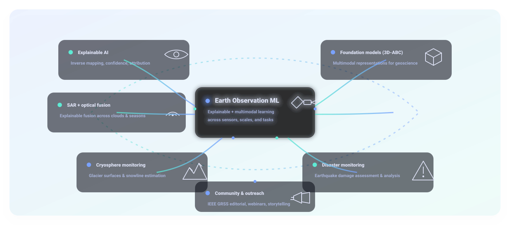

Turning multi-sensor Earth observations into interpretable science.
Research Scientist at Helmholtz-Zentrum Dresden-Rossendorf (HZDR), Germany, working on foundation models for Earth observation.
I hold a Ph.D. and M.Eng. in Electrical Engineering from The University of Tokyo, Japan, with a specialization in explainable AI for Earth observation.
My background lies in remote sensing, with specialized expertise in fusing Synthetic Aperture Radar (SAR) and multispectral optical data through explainable neural networks, applied to critical domains such as disaster monitoring and the cryosphere.
Beyond research, I actively contribute to the community through IEEE Geoscience and Remote Sensing Society (GRSS), where I serve as Webinar Strategist and Social Media Lead. Our team focuses on technical storytelling, educational outreach, and strengthening engagement across the Earth observation community.
What I have worked on

Explainable AI
SAR + optical fusion
Foundation models (3D-ABC)
Cryosphere monitoring
Disaster monitoring
Community & outreach